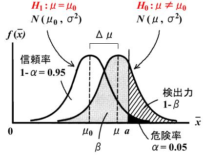
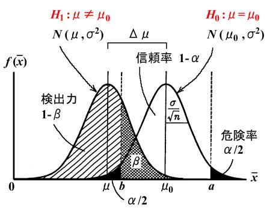
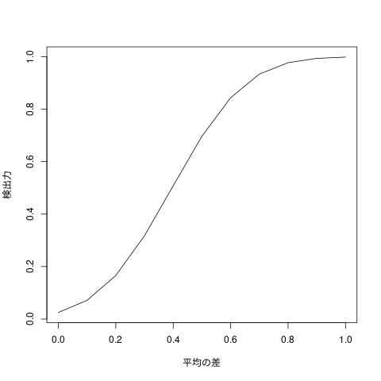
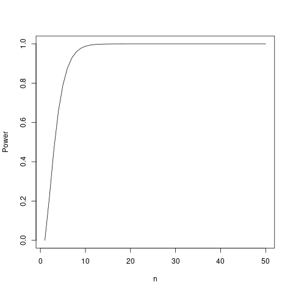

入門統計学 検出力
仮説と過誤
丁半賭博を例にした統計的判断
設定
- 甲と乙の二人が丁半賭博に参加し，
- 二人ともなけなしのお金を勝負の度にいつ も半に賭けたものと仮定します。
仮説
- この賭博場の謳い文句はクリーンなイメージの「イカサマはいない」（仮説） というものでした。
現実
- 最初の5回までの勝負ではイカサマは行われなかったが，たまたまその日は 最初の5回，丁ばかりの目が続いた
- 6回目以降はサイコロに細工をしていつも丁が出るようなイカサマをしてい た
とします。
甲と乙のとった行動
統計的判断の考え方の基本となります。
甲は生来アワテモノのせいか丁半勝負を始めてまだ2回しか丁が続かないのに、 この賭博はイカサマであると判断し席を蹴って退場しました。
これはイカサマをしていないという事実（仮説）が正しいのにイカサマをし ているといった誤った判断をアワテテしてしまった過誤（error）であり、 これを「第一種の過誤」（アワテモノの誤り、 Type Ⅰ errorあるいは error of the first kind）と言います。
それに対し、乙は生来ボンヤリモノのせいか、丁半勝負を始めてから10 回も丁の目が続いて出ているのに、博打だからまあそんなこともあるだろうと ちっともイカサマに気付かない様子で、お金がすってんてんになるまで何度も 半を賭け続けていました。
もちろん乙の考え方は確立統計の理論からすれば10回続けて丁の目が出る確 率はだけはあり得るわけですから、謳い文句（仮説）通りイカサマが全く行 われていなかったなら、この乙の判断には間違いがなかったと言えますが、 現実には6回目以降の丁半勝負ではイカサマが行われており事実は仮説とは 違うのに、その仮説をいつまでも正しいと判断したボンヤリモノの乙の判断 にはやはり重大な過誤がります。
このような事実は間違っている（仮説は正しくない）のに仮説を正しいと判 断する過誤のことを「第二の過誤」（ボンヤリモノの誤り、Type Ⅱ error あるいは error of the second kind）と言います。
危険率
そして、甲乙いずれもその犯した過誤の時点での確率のことを「危険率」 （critical rate）と統計学では呼んでいます。
すなわち、甲の危険率（甲が第一種の過誤を犯す危険率）は \[ P = (1/2)^2 = 1/l4 \]
であり、
乙の危険率（乙が第二種の過誤を犯す確率）は
\[ P = (1/2)^10 =1/1024 \]
ということです。
検出力と期待値の差と標本サイズ
片側検定
危険率 0.05% として，標準正規分布の上側95%点のz値は，
qnorm(0.95)
[1] 1.644854
[[]]
上図の\(N(\mu_0, \sigma^2)\) での a 点は，\( a = \mu_0 + 1.645 \sigma / \sqrt{n} \).
\(N(\mu, \sigma^2)\)でのa点は，\( a = \mu + z_{\a} \sigma / \sqrt{n} \).
\(z_{a} = \frac{a-\mu}{\sigma/\sqrt{n}} = 1.645 - (\mu - \mu_0)/\sigma/\sqrt{n} = 1.645 - \frac{\Delta\mu}{\sigma/\sqrt{n}}\)
検出力 \(1-\beta\) は，
\( 1-\beta = P(z>=z_{a}) \) と計算できる。
両側検定
危険率 0.05% として，標準正規分布の上側97.5%点のz値は，
qnorm(0.975)
[1] 1.959964
[[]]
上図の\(N(\mu_0, \sigma^2)\) での a 点は，\( a = \mu_0 + 1.96 \sigma / \sqrt{n} \), b 点は，\( b = \mu_0 - 1.96 \sigma / \sqrt{n} \).
\(N(\mu, \sigma^2)\)でのa点は，\( a = \mu + z_{a} \sigma / \sqrt{n} \), b点は，\( b = \mu - z_b{} \sigma / \sqrt{n} \).
\(z_{a} = \frac{a-\mu}{\sigma/\sqrt{n}} = 1.96 - (\mu - \mu_0)/\sigma/\sqrt{n} = 1.96 - \frac{\Delta\mu}{\sigma/\sqrt{n}}\)
\(z_{b} = \frac{b-\mu}{\sigma/\sqrt{n}} = -1.96 - (\mu - \mu_0)/\sigma/\sqrt{n} = -1.96 - \frac{\Delta\mu}{\sigma/\sqrt{n}}\)
検出力 \(1-\beta\) は，
\( 1-\beta = P(z>=z_{a}) + P(z <= z_b \) と計算できる。
power.t.test {stats} R Documentation
Power calculations for one and two sample t tests
Description
Compute the power of the one- or two- sample t test, or determine parameters to obtain a target power.
Usage
power.t.test(n = NULL, delta = NULL, sd = 1, sig.level = 0.05, power = NULL, type = c("two.sample", "one.sample", "paired"), alternative = c("two.sided", "one.sided"), strict = FALSE, tol = .Machine$double.eps^0.25)
Arguments
- n
- number of observations (per group)
- delta
- true difference in means
- sd
- standard deviation
- sig.level
- significance level (Type I error probability)
- power
- power of test (1 minus Type II error probability)
- type
- string specifying the type of t test. Can be abbreviated.
- alternative
- one- or two-sided test. Can be abbreviated.
- strict
- use strict interpretation in two-sided case
- tol
- numerical tolerance used in root finding, the default providing (at least) four significant digits.
Details
Exactly one of the parameters n, delta, power, sd, and sig.level must be passed as NULL, and that parameter is determined from the others. Notice that the last two have non-NULL defaults, so NULL must be explicitly passed if you want to compute them.
If strict = TRUE is used, the power will include the probability of rejection in the opposite direction of the true effect, in the two-sided case. Without this the power will be half the significance level if the true difference is zero.
Value
Object of class "power.htest", a list of the arguments (including the computed one) augmented with method and note elements.
Note
uniroot is used to solve the power equation for unknowns, so you may see errors from it, notably about inability to bracket the root when invalid arguments are given.
Author(s)
Peter Dalgaard. Based on previous work by Claus Ekstrøm
See Also
t.test, uniroot
Examples
power.t.test(n = 20, delta = 1)
Two-sample t test power calculation
n = 20
delta = 1
sd = 1
sig.level = 0.05
power = 0.8689528
alternative = two.sided
NOTE: n is number in *each* group
power.t.test(power = .90, delta = 1)
Two-sample t test power calculation
n = 22.0211
delta = 1
sd = 1
sig.level = 0.05
power = 0.9
alternative = two.sided
NOTE: n is number in *each* group
power.t.test(power = .90, delta = 1, alternative = "one.sided")
Two-sample t test power calculation
n = 17.84713
delta = 1
sd = 1
sig.level = 0.05
power = 0.9
alternative = one.sided
NOTE: n is number in *each* group
[Package stats version 4.0.3 Index]
H0 と H1 の μ の差を大きくしていったとき、
検出力がどう変化するか R でプロットしてみます。今回サンプルサイズは 50、 分散は 1 に固定します。
# 平均の差 0 ~ 1 deltas <- seq(0, 1, length=11) # 分散 1、サンプルサイズ 50 の検出力 powers <- power.t.test(n=50, delta=deltas, sd=1)$power plot(deltas, powers, type="l", xlab = "平均の差", ylab = "検出力")

R言語 検出力・サンプルサイズ t検定や母比率の検定の検出力の計算
R言語 検出力・サンプルサイズ t検定や母比率の検定の検出力の計算
- power.t.test の計算法と実行例
- power.prop.testの計算法と実行例
- power.anova の計算法と実行例
examples
power.t.test
関数power.t.testを用いて検出力とサンプルサイズの計算を行っていきます。
検出力
次を実行することで、観測数n=10、母平均の差δ=0.1、標準偏差σ=0.05、第一の過誤α=0.05のときのt検定の検出力を計算することができます。
n <- 10 # サンプルサイズ alpha <- 0.05 # 危険率 delta <- 0.1 # 平均値の差 sd <- 0.05 # 標準偏差 (power <- power.t.test(n = n, delta = delta, sd = sd, sig.level = alpha))
Two-sample t test power calculation
n = 10
delta = 0.1
sd = 0.05
sig.level = 0.05
power = 0.988179
alternative = two.sided
NOTE: n is number in *each* group
powerを参照すると検出力=0.988179であることが分かります。
結果の利用
power.t.testの返り値はリスト型となっており、観測数n=20や検出力1−βの値がリストの要素として格納されています。
次のようにして検出力やそのほかのパラメータを取得することが可能です。
power$n #観測数:n power$delta #仮説検定の2群間の差:δ power$sd #標準偏差 power$sig.level #有意水準:α power$power #検出力:1-β
[1] 10 [1] 0.1 [1] 0.05 [1] 0.05 [1] 0.988179
次のように、power.t.testによって計算された値をデータフレームに格納すると、csvなどに表として出力するとき便利です。
(powerResult <- data.frame(n = power$n, delta = power$delta, sd = power$sd,
alpha = power$sig.level, power = power$power))
n delta sd alpha power 1 10 0.1 0.05 0.05 0.988179
write.csvを使ってpowerResultを出力すると次の画像のcsvファイルが保存されているのが確認できます。
write.csv("power.t.test.csv", powerResult)
isOpen(file, "w") でエラー: コネクションが不正です
追加情報: 警告メッセージ:
if (file == "") file <- stdout() else if (is.character(file)) { で:
条件が長さが 2 以上なので、最初の 1 つだけが使われます
サンプルサイズの計算法
検出力が与えられたときのサンプルサイズは power.t.test のn以外のパラメー タを与えることで計算できます。
次を実行することで、母平均の差δ=0.1、標準偏差σ=0.05、第一の過誤α=0.05のとき検出力が0.9を超えるようなサンプルサイズを計算することができます。
beta <- 0.1 power <- power.t.test(delta = delta, sd = sd, sig.level = alpha, power = 1 - beta) power$n #サンプルサイズ
[1] 6.386756
powerを参照するとサンプルサイズは6.386756であることが分かりました。
power
Two-sample t test power calculation
n = 6.386756
delta = 0.1
sd = 0.05
sig.level = 0.05
power = 0.9
alternative = two.sided
NOTE: n is number in *each* group
グラフによる確認
実際に検出力と観測数についてのグラフを描くと上で計算したサンプルサイズ が正しいことが確認できます。
powers <- sapply(seq_len(50), function(x) { power <- power.t.test(n = x, delta = delta, sd = sd, sig.level = alpha) power$power }) plot(powers, type = "l", xlab = "n", ylab= "Power")

power.anova.test
検出力
引数に検定で用いるパラメータや第一の過誤を設定することで実行できます。
次を実行すると、群の数k=4、観測数n=10、群間の分散σ2B=0.01、群内の分散 σ2W=0.025、第一の過誤α=0.05のときの母比率の差の検定の検出力を計算す ることができます。
n <- 10 alpha <- 0.05 numberOfGroups <- 4 sigmaB <- 0.01 #群間の分散 sigmaW <- 0.025 #群内の分散 power <- power.anova.test(groups = numberOfGroups, n = n, between.var = sigmaB, within.var = sigmaW, sig.level = alpha)
powerを参照すると検出力=0.7942482であることが確認できます。
power
Balanced one-way analysis of variance power calculation
groups = 4
n = 10
between.var = 0.01
within.var = 0.025
sig.level = 0.05
power = 0.7942482
NOTE: n is number in each group
他の関数と同様に検出力などの値はリストの要素として格納されている多め、powerのうしろに$を付けることで各値を取得することが可能です。
class(power) power$groups #群の数 power$n #観測数 power$between.var #群間の分散 power$within.var #群内の分散 power$sig.level #有意水準:α power$power #検出力:1-β
[1] "power.htest" [1] 4 [1] 10 [1] 0.01 [1] 0.025 [1] 0.05 [1] 0.7942482
powerResult <- data.frame(No.groups = power$groups, n = power$n, sigmaB = power$between.var,
sigmaW = power$within.var, alpha = power$sig.level, power = power$power)
powerResult
サンプルサイズ
サンプルサイズも他の関数と同様に観測数以外の引数を与えてあげることで計算することができます。
以下、群の数k=4、群間の分散σ2B=0.01、群内の分散σ2W=0.025、第一の過誤 α=0.05のとき検出力が0.9を超えるようなサンプルサイズを計算する例です。
power <- power.anova.test(groups = numberOfGroups, between.var = sigmaB, within.var = sigmaW, sig.level = alpha, power = 1 - beta) power$n #サンプルサイズ
[1] 12.83399
power
Balanced one-way analysis of variance power calculation
groups = 4
n = 12.83399
between.var = 0.01
within.var = 0.025
sig.level = 0.05
power = 0.9
NOTE: n is number in each group
サンプルサイズ=12.83399であり、観測数n=10のときと比較すると検出力が0.9 を超えるためにはあと3標本足りないことがわかりました。